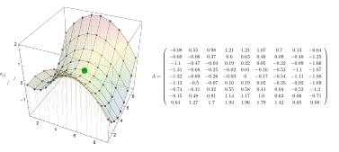

Conference paperSOSA 2024January 2024
Finding the saddlepoint faster than sorting

The saddlepoint of a matrix is an entry that is simultaneously the minimum in its column and the maximum in its row. Note that not every matrix has a saddlepoint.
The complexity of finding a saddlepoint if it exists strongly depends on details of the definition: If min and max are non-strict, then $\Theta(n^2)$ time is necessary and sufficient for an $n\times n$ matrix; if min and max must be strict, however, almost-linear time is possible (and most entries in the matrix need not be inspected).

The clean and simple algorithm from Bienstock, Chung, Fredman, Schäffer, Shor, and Suri (1991) effectively requires sorting $n$ elements and achieves an overall time of $O(n \log n)$. This made it look like sorting could be a necessary bottleneck, especially when trying to certify that a matrix has no saddlepoint. Alas, we show that this is not true; an entirely different approach via the relaxed notion of a pseudo saddlepoint allows in $O(n \log^* n)$ time to reduce the search space for possible saddlepoints to a single value, which can then be checked in linear time.
Reference
Justin Dallant, Frederik Haagensen, Riko Jacob, László Kozma, and Sebastian Wild: Finding the saddlepoint faster than sorting. Symposium on Simplicity in Algorithms (SOSA) 2024. doi:10.1137/1.9781611977936.17
BibTeX
@inproceedings{DallantHaagensenJacobKozmaWild2024,
title = {Finding the saddlepoint faster than sorting},
author = {Justin Dallant and Frederik Haagensen and Riko Jacob and L\'{a}szl\'{o} Kozma and Sebastian Wild},
booktitle = {Symposium on Simplicity in Algorithms (SOSA) 2024},
pages = {168--178},
publisher = {SIAM},
year = {2024},
doi = {10.1137/1.9781611977936.17},
eprint = {2310.16801},
urlHidden = {https://www.wild-inter.net/publications/dallant-haagensen-jacob-kozma-wild-2024}
}
Timeline
- Jul 2023 written
- Oct 2023 arXiv 2310.16801
- Jan 2024 SOSA 2024